Framework Overview
Three condition modalities, two semantic levels, one unified protocol.
ConTSG-Bench aligns class labels, structured attributes, and text descriptions for time series from healthcare, meteorology, energy, traffic, network telemetry, and synthetic domains.
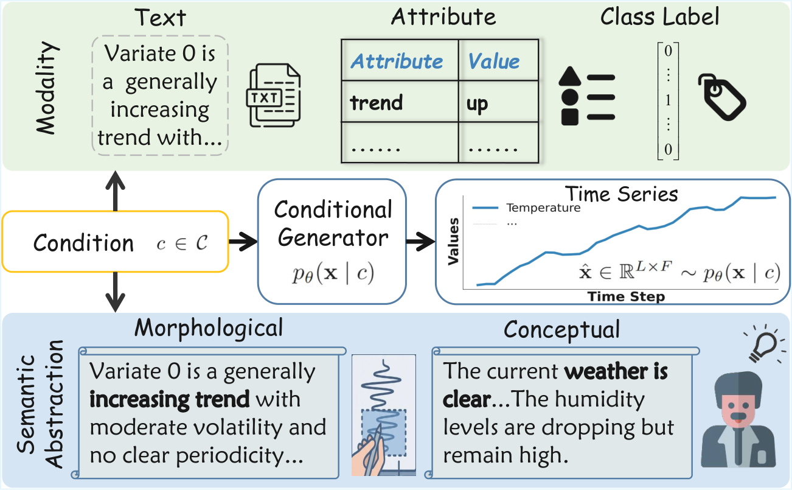
Data Alignment
Aligned multimodal conditions for conditional generation.
The benchmark builds a shared condition space around each time series. Existing domain labels are preserved where available, structured attributes expose controllable factors, and textual descriptions make model behavior comparable under natural-language conditions.
Labels
Discrete classes for label-conditioned generators and downstream utility tests.
Attributes
Structured control variables for compositional and counterfactual settings.
Text
Morphological and conceptual descriptions for semantic alignment evaluation.
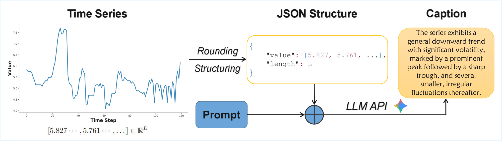
Benchmark Comparison
Coverage across modalities, semantics, and evaluation dimensions.
Prior work usually covers a narrow conditioning setting. ConTSG-Bench is designed to evaluate fidelity, condition adherence, fine-grained control, compositional generalization, and downstream utility under the same benchmark protocol.
| Method | Text | Attr. | Label | Morph. | Concept | Adh. | Fine-gr. | Comp. Gen. | Down. Util. |
|---|---|---|---|---|---|---|---|---|---|
| Existing Benchmark | |||||||||
| TSGBench | - | - | ✓ | - | - | - | - | - | ✓ |
| Label-conditioned | |||||||||
| TimeVQVAE | - | - | ✓ | - | - | - | - | - | ✓ |
| TTS-CGAN | - | - | ✓ | - | - | - | - | - | ✓ |
| Diffusion-TS | - | - | ✓ | - | ✓ | - | - | - | ✓ |
| Attribute-conditioned | |||||||||
| TimeWeaver | - | ✓ | - | - | - | ✓ | - | - | ✓ |
| TEdit | - | ✓ | - | - | - | ✓ | - | ✓ | - |
| WaveStitch | - | ✓ | - | - | - | - | - | - | - |
| Text-conditioned | |||||||||
| Text2Motion | ✓ | - | - | ✓ | - | ✓ | - | - | - |
| DiffuSETS | ✓ | - | - | - | ✓ | - | - | - | - |
| BRIDGE | ✓ | - | - | - | ✓ | ✓ | - | - | ✓ |
| T2S | ✓ | - | - | ✓ | - | ✓ | - | - | - |
| VerbalTS | ✓ | ✓ | ✓ | ✓ | - | ✓ | - | - | - |
| ConTSG-Bench | ✓ | ✓ | ✓ | ✓ | ✓ | ✓ | ✓ | ✓ | ✓ |
Main Quantitative Results
Fidelity and condition adherence expose different model strengths.
The main ranking separates marginal generation quality from conditional alignment. This prevents realistic but mismatched samples from being counted as successful conditional generation.
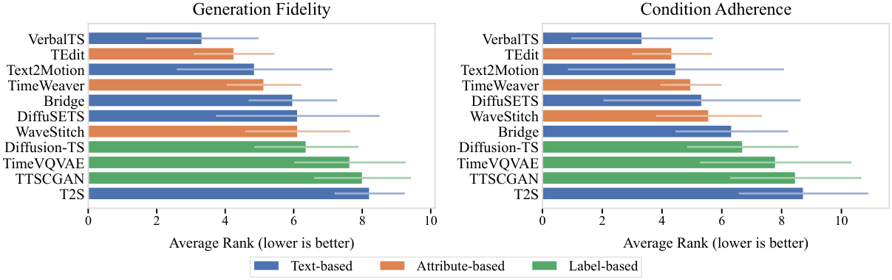
Fidelity is not enough
Models can generate plausible time series while failing to follow the requested condition.
Text has the highest ceiling
Text-conditioned models include the strongest results, while also showing the widest variance.
Robustness varies by dataset
Large cross-dataset error bars show that no current generator dominates every domain.
Behavior Analyses
Additional analyses from the final paper.
These panels summarize the paper's deeper studies of semantic abstraction, fine-grained control, compositional generalization, and downstream utility.
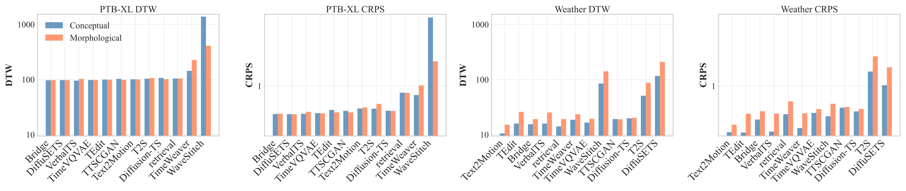
Morphological vs. conceptual conditions
Condition semantics change generation difficulty in a dataset-dependent way.
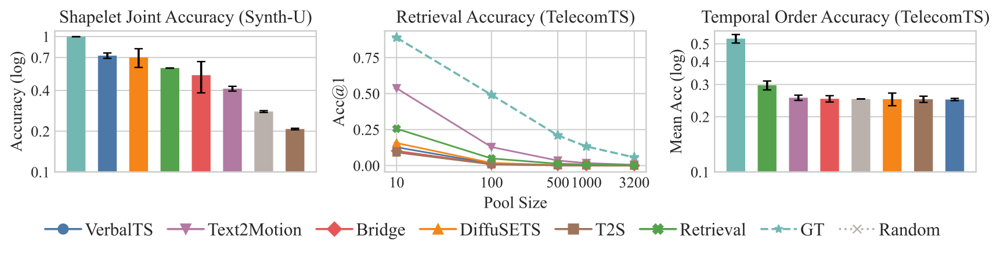
Fine-grained local control
Most generators struggle to preserve segment-level semantics on real-world dynamics.
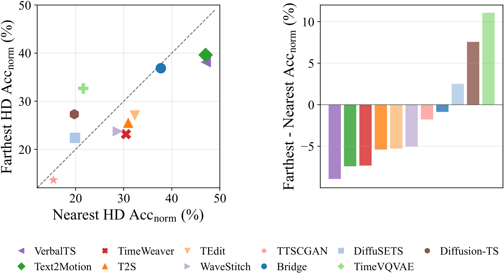
Compositional generalization
Novel attribute combinations remain difficult, especially for models that strongly follow conditions.
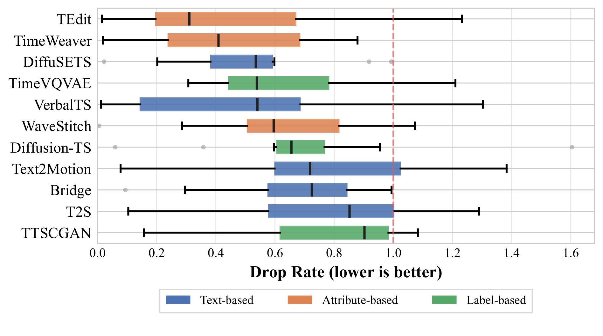
Downstream utility
Generated data can help classification, but utility is highly dependent on the dataset and model pair.
Qualitative Cases
Side-by-side generated time series across benchmark domains.
The final paper visualizes ground-truth series against generated medians and quantile bands, revealing variance calibration and temporal dynamics that aggregate metrics may obscure.
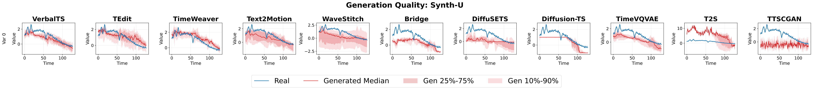
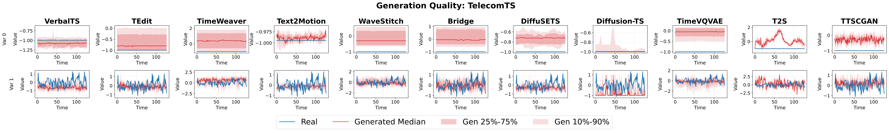
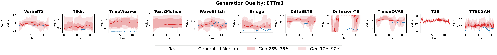
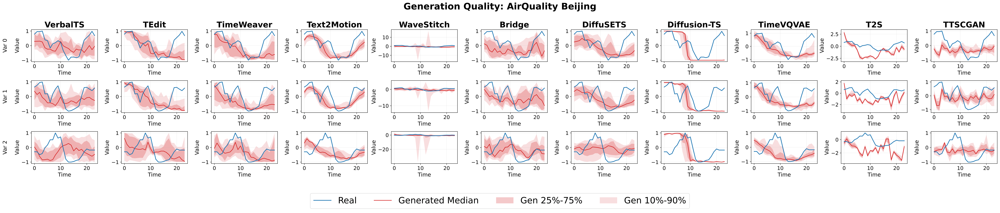
Metric Validation
CTTP score differences align with visual preference judgments.
Pairwise validation compares CTTP score direction against an LLM-based visual preference evaluator. Larger CTTP gaps produce stronger agreement, supporting CTTP as a meaningful condition-adherence signal.
| CTTP gap | Agree / Total | Agreement | p-value |
|---|---|---|---|
| |ΔCTTP| ≥ 0.5 | 208 / 360 | 57.8% | 0.002 |
| |ΔCTTP| ≥ 1.0 | 165 / 273 | 60.4% | 0.0003 |
| |ΔCTTP| ≥ 2.0 | 106 / 175 | 60.6% | 0.003 |
| |ΔCTTP| ≥ 3.0 | 76 / 120 | 63.3% | 0.002 |
Inference Efficiency
Deployment cost differs sharply across model families.
Models are profiled on Synth-U using a single NVIDIA A40 GPU with 10 generated samples per condition. Latency varies widely, and model size alone does not determine runtime.
| Model | Params | Latency | VRAM |
|---|---|---|---|
| Bridge | 22.1M | 13.47 ms | 1.87 GB |
| DiffuSETS | 30.6M | 0.69 ms | 0.68 GB |
| Diffusion-TS | 1.1M | 55.92 ms | 4.50 GB |
| T2S | 971.9K | 3.90 ms | 1.08 GB |
| TEdit | 1.2M | 0.86 ms | 0.51 GB |
| Text2Motion | 32.9M | 0.22 ms | 0.20 GB |
| TimeVQVAE | 2.0M | 8.79 ms | 0.04 GB |
| TimeWeaver | 326.5K | 0.58 ms | 0.24 GB |
| TTSCGAN | 246.8K | 0.03 ms | 0.13 GB |
| VerbalTS | 52.5M | 5.43 ms | 0.26 GB |
| WaveStitch | 472.5K | 4.71 ms | 1.04 GB |
Citation
Cite ConTSG-Bench
@inproceedings{lan2026contsgbench,
title = {ConTSG-Bench: A Unified Benchmark for Conditional Time Series Generation},
author = {Lan, Shaocheng and Gu, Shuqi and Xiong, Zhangzhi and Ren, Kan},
booktitle = {Proceedings of the 43rd International Conference on Machine Learning},
year = {2026}
}